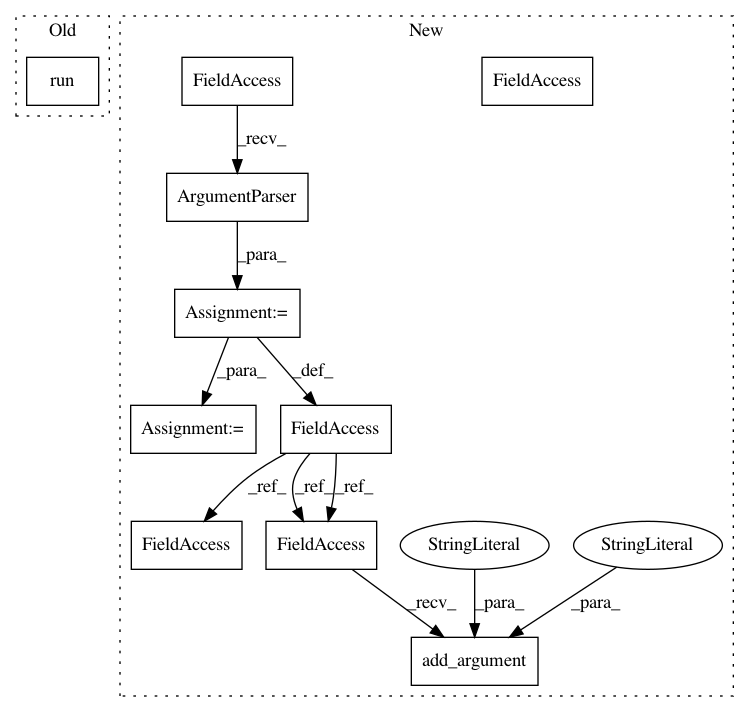

5d3c9c8861ee658b7931bb374603f86987c17433,python/ray/tune/examples/mlflow_example.py,,,#,33
Before Change
client = MlflowClient()
experiment_id = client.create_experiment("test")
trials = tune.run(
easy_objective,
name="mlflow",
num_samples=5,
loggers=DEFAULT_LOGGERS + (MLFLowLogger, ),
config={
"logger_config": {
"mlflow_experiment_id": experiment_id,
},
"width": tune.randint(10, 100),
"height": tune.randint(0, 100),
})
df = mlflow.search_runs([experiment_id])
print(df)
After Change
if __name__ == "__main__":
import argparse
parser = argparse.ArgumentParser()
parser.add_argument(
"--smoke-test", action="store_true", help="Finish quickly for testing")
args, _ = parser.parse_known_args()
if args.smoke_test:
mlflow_tracking_uri = os.path.join(tempfile.gettempdir(), "mlruns")
else:
In pattern: SUPERPATTERN
Frequency: 3
Non-data size: 10
Instances
Project Name: ray-project/ray
Commit Name: 5d3c9c8861ee658b7931bb374603f86987c17433
Time: 2020-12-19
Author: amogkam@users.noreply.github.com
File Name: python/ray/tune/examples/mlflow_example.py
Class Name:
Method Name:
Project Name: unitedstates/congress-legislators
Commit Name: 2a9d3395c5e74373632c82c21592e3d370945adb
Time: 2017-10-26
Author: tcarobruce@gmail.com
File Name: scripts/office_validator.py
Class Name:
Method Name:
Project Name: ray-project/ray
Commit Name: 5d3c9c8861ee658b7931bb374603f86987c17433
Time: 2020-12-19
Author: amogkam@users.noreply.github.com
File Name: python/ray/tune/examples/mlflow_example.py
Class Name:
Method Name:
Project Name: haotianteng/Chiron
Commit Name: 3f6e470ad9a26b131b59a0fcf0fee128b81f7287
Time: 2018-03-04
Author: havens.teng@gmail.com
File Name: chiron/chiron_train.py
Class Name:
Method Name: